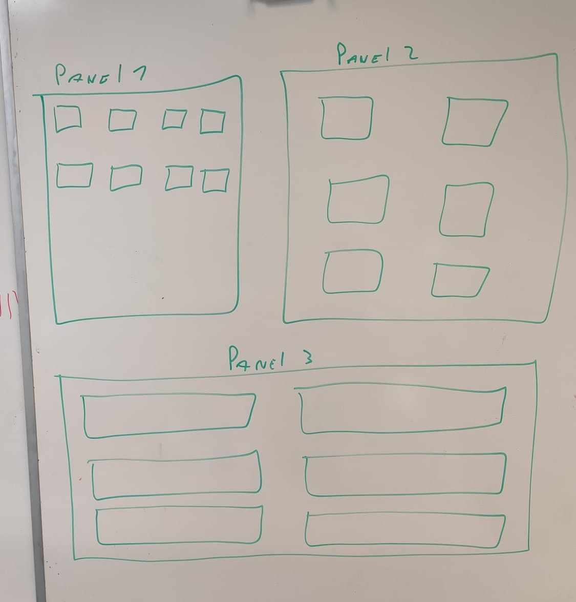

Interface utilisateur utilisable à la manette¶
Réception des input des manettes connecté¶
L’utilisateur de Caiman a la possibilité de pouvoir utiliser l’application au clavier souris mais aussi à la manette. Pour ce faire, j’ai utilisé le paquet nuGet “SharpDX.XInput”. Ce paquet me permet de connaître les manettes connectées au pc ainsi que les touches appuyées par l’utilisateur.
La seule manette qui peut se déplacer dans l’application est la manette 1. Pour connaître les boutons de la manette, j’utilise la fonction getInput(). Cette fonction me permet de connaître les touches qui sont pressées à un instant T. Je vais chercher les inputs toutes les 2ms pour être sûr de ne pas louper d’inputs.
Les inputs sont ensuite traités par l’interface de l’application qui décide quoi en faire selon le contexte.
Transformation des input de la manette en événement¶
Les inputs de la manette sont analysés par la form principale de Caiman. Selon la ou les touches qui sont pressées, l’application exécute des actions différentes. Par exemple, quand la touche “A” est pressée, alors le programme envoie la touche ENTER à l’application ce qui me permet de cliquer sur des boutons.
Pour gérer les événements, je fais un test pour savoir si l’utilisateur utilise l’application ou non . Si l’application n’est pas focus par l’utilisateur, seul une partie des actions sont possibles pour éviter que des actions inattendues puissent arriver alors que l’application n’est plus visible.
Structure de l’affichage¶
L’affichage est constitué d’un “XboxMainForm”. Il sert à contenir tous les autres panels, il est aussi chargé de la gestion des inputs de la manette de l’utilisateur 1.
Un “XboxMainForm” contient une liste de XboxUserController qui elles contiennent différentes choses comme des boutons des images ou des labels.
Le XboxMainForm est aussi responsable de la gestion des demandes de l’utilisateur, par exemple si l’utilisateur veut afficher l’accueil de Caiman, il va lui passer un objet contenant sa demande. Il va donc traiter les demandes et afficher les panels selon les besoins de l’utilisateur.
Déplacement dans un panel de l’application¶
L’application est conçue avec des “panels”, c’est-à-dire une liste de listes de controls. Cette liste de controls est propre à chaque panel. Les panels contiennent aussi une variable position_x et position_y qui permettent de connaître le control actuellement sélectionné par l’utilisateur. Quand l’utilisateur décide de se déplacer, il demande au panel de modifier ses variables x et y. Avant de valider ce changement, le panel regarde si le déplacement demandé par l’utilisateur est possible ou non.
Il existe 3 possibilités:
Le déplacement est possible, alors la position sur l’axe x,y est modifiée.
Le déplacement est impossible car il n’y a rien à l’emplacement demandé. Dans ce cas, le panel va décider de bouger le curseur sur un des emplacements possibles.
L’utilisateur est à la fin du panel et “sors du panel” dans ce cas il va se diriger dans un autre panel s’il y en a un dans la direction demandée.
Déplacement de panel en panel¶
Chaque “panel” possède un pointeur sur le panel du haut, du bas, de droite et de gauche.
Ces pointers ne sont pas forcément utilisés, ils ont le droit d’être nul.
Si on prend l’exemple suivant:

Nous avons 3 panels différents qui contiennent chacun plusieurs controls.
Le panel 1 possède donc deux pointeurs différents, un sur le panel 2 et un autre sur le panel 3.
trop confus
Si l’utilisateur se trouve en bas du panel 1 et qu’il décide de se déplacer encore plus bas, il ne pourra pas car aucune case n’est disponible dans ce panel. C’est pourquoi une vérification sera faite pour savoir si un panel est indiqué comme le panel “down”, si tel est le cas le focus va changer de panel.
Un autre cas possible est que l’utilisateur va peut-être décider de retourner sur le panel 1. La contrainte est de savoir où doit pointer le panel haut du panel 3. Actuellement, un seul panel peut être défini par côté, mais la solution est de créer de petits panels pour éviter que ces situations arrivent.